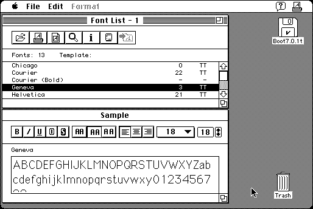

Download
mac-font-301.zip (147K) MacFont 3.01 repackaged into a zipped hfs disk image and checksum file. The disk image can be mounted with Mini vMac.
mac-font-301.hqx (201K) MacFont 3.01 in the original format.
copyright: Bruno Di Gleria
mod date: May 16, 1998
license: shareware
from url :
mixagesoftware downloadables
“Display/print a list of your TrueType™, PostScript™ and bitmapped fonts”, “without installing them”, and formatted “using editable templates”. For “system 7.0 or greater”.

If you find these downloads useful, please consider helping the Gryphel Project, which hosts them.
Here are the md5 checksums for the downloads, signed with Gryphel Key 5:
--------- GRY SIGNED TEXT --------- 3c9efbd60cb485717ebdbe677cfa0e66 mac-font-301.zip 40d8540047aff3644f6fdd6b34303a3f mac-font-301.hqx ------- BEGIN GRY SIGNATURE ------- Gry/4Xa8CFcUzxdN/ASImLkBhKayjU1s1LucIgh2DYV3czsSqM1TIyvTD+odgW7i 9SfBS/r73Aq7UWFEHkkBHrK5BB5V4R/+oGCg8fUZGB1a/2opOnJOEtlyA1zhe3BT EDNk9WBPCj+dk5COOPXx53qgPqgt8paO+5R2ApmAkBElvOJ+ID/oNOwiKEzBYkaG -------- END GRY SIGNATURE --------